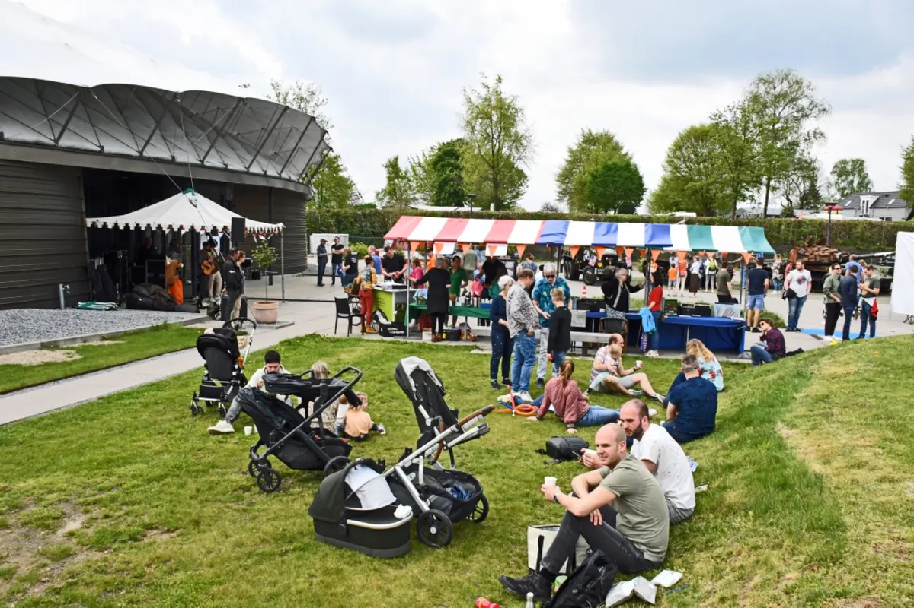
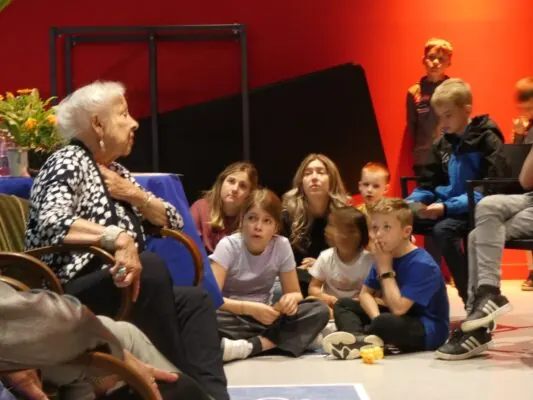

Nieuws ·
Meivakantie en Bevrijdingsdag in het Vrijheidsmuseum

De Meivakantie staat voor de deur en daarmee nadert ook de nationale Bevrijdingsdag op 5 mei. Natuurlijk blijft het Vrijheidsmuseum hier niet achter; met een speciaal voor kinderen ontwikkeld programma kun je je twee weken lang laten inspireren door het verhaal van Oorlog en Vrijheid zonder Grenzen!
Bij de ‘Anne Frank middag’ duik je dieper in haar beroemde maar korte levensverhaal en bij ‘Grootouders vertellen’ luister je naar ervaringsverhalen van de oorlog en de bevrijding.
Tijdens de familiedagen krijgen gezinnen korting op de entree. (€6 i.p.v. €8 voor kinderen en €35 i.p.v. €43 voor een familieticket, bestaande uit 2 volwassenen en 2 kinderen.)
Het museum doet weer mee aan de landelijke actie “Niet weggooien” en opent samen met andere WO2 musea de deuren voor eventuele schenkingen aan de museumcollectie. Dit keer in een bijzonder thema, namelijk Liefde. Alle objecten die afkomstig zijn uit de periode van de Tweede Wereldoorlog en betrekking hebben tot dit thema, worden dan graag bekeken door de conservator. Dus heb je nog liefdesbrieven, romantische foto’s of relatiegeschenken uit deze tijd op zolder liggen en weet je niet wat je ermee moet? Het museum verwelkomt ze graag op vrijdag 3 mei!

En natuurlijk wordt het een bijzondere viering op zondag 5 mei, om stil te staan bij de vrijheid waar wij in West-Europa al 79 jaar van genieten. Een rijk programma staat klaar om je te inspireren! Met leuke kinderactiviteiten, livemuziek en een hapje en een drankje zal het goed toeven zijn, in het Vrijheidsmuseum. Voor deze dag geldt het speciale tarief van €8,- p.p., inclusief entree tot het museum.
Meivakantie
Zie hieronder een kort overzicht van het programma in de meivakantie:
Dinsdag 30 april Familiedag “Kijk je ogen uit!”
Woensdag 1 mei Anne Frank middag
Donderdag 2 mei Grootouders vertellen
Vrijdag 3 mei Vrijheidsmuseum zoekt liefde! (Actie “Niet weggooien!”)
Zondag 5 mei Feestelijke Bevrijdingsdag
Dinsdag 7 mei Grootouders vertellen
Woensdag 8 mei Anne Frank middag
Donderdag 9 mei Familiedag “Kijk je ogen uit!”
Programmawijzigingen voorbehouden. Voor veel van de activiteiten is reserveren noodzakelijk.
Kijk voor het volledige, actuele programma op www.vrijheidsmuseum.nl.
Dit is ook je laatste kans om nog een kijkje te nemen in de zinderende expositie “Dubbelspion”, waar je de avontuurlijke levensverhalen ontdekt van vier echte dubbelspionnen uit de Tweede Wereldoorlog. Deze nog te beleven tot en met zondag 5 mei 2024!